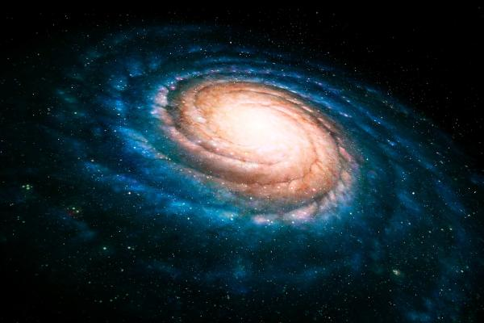

1. Introducción |
|---|
2. Biografía |
3. Jornada laboral |
4. Premios |
La astrofísica es el desarrollo y estudio de la física aplicada a la astronomía. Estudia las estrellas, los planetas, las galaxias, los agujeros negros y demás objetos astronómicos como cuerpos de la física, incluyendo su composición, estructura y evolución. La astrofísica emplea la física para explicar las propiedades y fenómenos de los cuerpos estelares a través de sus leyes, fórmulas y magnitudes. La astrofísica es un campo muy amplio, por ello, los astrofísicos aplican normalmente muchas disciplinas de la física, incluyendo la física nuclear, la física relativista, la mecánica clásica, el electromagnetismo, la física estadística, la termodinámica, la mecánica cuántica, la física de partículas, la física atómica y molecular. Además, la astrofísica está íntimamente vinculada con la cosmología, que es el área que pretende describir el origen del universo.

Julia de León Cruz nació en Santa Cruz de Tenerife (España) en 1977. Estudió Físicas en la Universidad de La Laguna y se doctoró en Astrofísica por la misma universidad en 2009. Mientras hacía su tesis doctoral, trabajó como astrónoma para el Instituto Astrofísico de Canarias (IAC), monitorizando basura espacial. Actualmente, sigue trabajando en este mismo centro, el Instituto de Astrofísica de Canarias (IAC), donde ejerce como Investigadora Distinguida y lidera el Grupo de Sistema Solar. Su investigación se centra principalmente:
Defensa planetaria y desvío de asteroides: el objetivo es analizar cómo se deforma un asteroide tras un choque para saber cómo desviar futuras amenazas.
Caracterización y composición mineralógica: investiga de qué están hechos exactamente los asteroides, utilizando la espectroscopia para identificar sus minerales y entender las propiedades físicas de su superficie.
Orígenes del Sistema Solar: busca descifrar cómo se formaron los planetas y cómo llegó el agua o la materia orgánica a la Tierra primitiva.
Aunque no pasa todas las noches en el observatorio (hoy en día casi todo está automatizado), ella y su equipo programan y utilizan los grandes telescopios de Canarias (como el Telescopio NTT o el Gran Telescopio Canarias). Su tarea consiste en apuntar a zonas específicas del cielo para capturar la luz de los asteroides que se acercan a la Tierra.
Una vez que obtiene los datos del telescopio, trabaja en el ordenador analizando la luz reflejada por los asteroides. Al descomponer esa luz (un proceso llamado espectroscopia), Julia puede descifrar la "huella dactilar" del objeto. Esto le permite saber en su oficina de qué está hecho el asteroide (silicatos, carbono, metales, etc.) sin necesidad de ir hasta allí.
Pasa gran parte de su tiempo frente a pantallas analizando datos, desarrollando código y creando modelos informáticos. Con esto calcula órbitas, predice el comportamiento de los asteroides tras recibir un impacto (como el de la misión DART/Hera) y estudia cómo rotan o cómo cambia su superficie debido a la radiación solar.
Al ser una figura clave de la Agencia Espacial Europea (ESA) en España, su trabajo incluye muchísimas reuniones internacionales (ahora la mayoría virtuales). Se encarga de coordinar a científicos de todo el mundo para que, cuando un asteroide pase cerca o una misión espacial necesite apoyo desde tierra, todos los telescopios sepan exactamente cuándo y dónde apuntar.
Como científica principal, dedica muchas horas a escribir artículos para revistas científicas internacionales explicando sus descubrimientos, a revisar el trabajo de otros científicos y a dirigir a estudiantes de doctorado e investigadores más jóvenes que están empezando en el sector.
| Premios internacionales | Premios nacionales |
|---|---|
| Nombramiento del Asteroide (8324) (2017) | Premio Mujeres a Seguir (MAS) en la categoría de Ciencia (2025) |